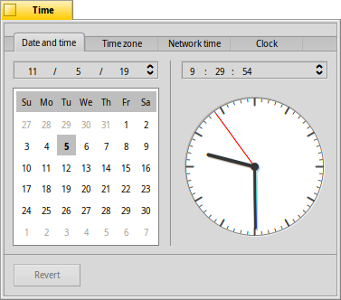
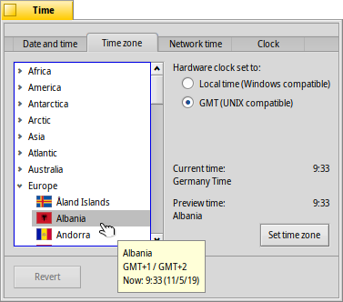
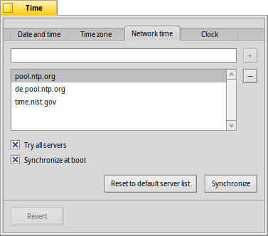
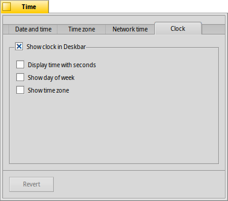

日付と時刻 (Time)
日付と時刻 (Time)
| Deskbar: | ||
| 場所: | /boot/system/preferences/Time | |
| 設定ファイル: | ~/config/settings/networktime settings - ネットワークを通じた時刻同期に関するすべての設定 ~/config/settings/RTC_time_settings - ハードウェアクロックの設定 (現地時刻または GMT) ~/config/settings/Time settings - タイムゾーン設定 ~/config/settings/Time_preflet_window - パネル位置など |
この設定は、4 つのタブに分けられています。
 日付と時刻 (Date and time)
日付と時刻 (Date and time)

左側でカレンダーをクリックすると、日を設定します。月と年はクリックしてから右側の上下矢印で変更するか、またはキーボードのカーソルキーを使って変更します。
同様に、右側で時刻を設定します。または、単純に時計の針を直接動かします。
タイムゾーン (Time zone)

地域のリストからユーザーの国を探して選択し、 を押すだけです。複数のタイムゾーンがある国はもう一段深いレベルに展開する必要があるでしょう。
右側には、現在設定されているタイムゾーンの時刻と、ユーザーが選んだタイムゾーンの時刻が表示されます。
右側にはコンピューターのハードウェアクロックの設定があります。クロックには次の 2 つのモードがあります。
| 現地時刻を表示するモード。通常、Windows とデュアルブートする場合に設定する。 | ||
| グリニッジ標準時 (Greenwich Mean Time) を表示するモード。UNIX と互換の設定。 |
ネットワークタイム (Network time)
インターネットに接続しているなら、日付と時刻を手動で設定することはもう時代遅れです。大変正確な時刻信号を提供する公開サーバーがあります。
/ ボタンでリストへ NTP サーバーを追加 / 削除できます。
下のチェックボックスは、システムに時刻の同期時に現在選択されているサーバーだけではなく、 ように伝えます。また、常に正しい時刻を示していることを確認するため、 するようにも伝えます。
誤って稼働中の NTP サーバーを削除した場合、 でき、また、手動で時計を することも可能です。また、同期はコマンドライン (またはスクリプト) からも実現できます。
Time --update
時計 (Clock)

最後のタブは、Deskbar に表示された時計のオプションです。最初のチェックボックスで時計を完全に非表示にできます。その他のチェックボックスはひと目でわかるものです。
すべてのタブには ボタンがあり、日付と時刻プレファレンスの起動時の設定に戻します。